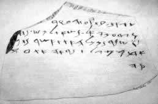

Lachish Letters

- Find Name
- Lachish Letters
- Historical Period
- Iron Age II
- Artifact Date
- c. 588-586 BC
- Date Discovered
- 1935
- Discovery Location
- Lachish (Tell ed-Duweir), Israel
- Current Location
- British Museum, London
- Timeline Era
- Exile
- Description
- A group of ink-inscribed pottery sherds (ostraca) found in a guardroom at Lachish, mostly letters from a field officer named Hoshaiah to his commander Yaush. Written in rapid Hebrew script, they report watching for signal fires from Azekah because Lachish could no longer see them.
- Biblical Significance
- Jeremiah records that Lachish and Azekah were the last fortified cities holding out as Babylon closed in, and these letters appear to catch that very moment. One letter even echoes complaints made against Jeremiah. They bring the fall of Jerusalem out of abstraction and into the handwriting of frightened, faithful men.
- Evidence Class
- Direct
- Interpretations
- Scholars agree these are genuine military letters from Judah’s final years; debate concerns a few readings and the identity of some named officials.
- Scripture Illuminated
- Related People
- Related Books
- Related Places
- Related Events
Awaiting Review Not yet checked against scholarly sources. Treat its claims as provisional until this entry is reviewed. About verification
Last reviewed: not yet reviewed